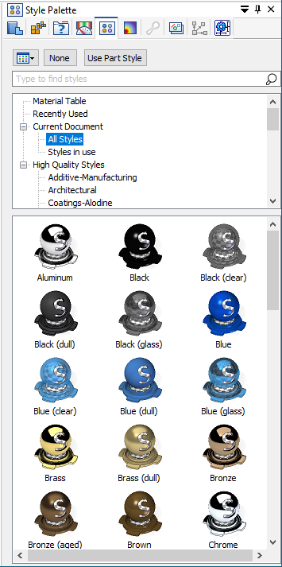

Search for a style in the Style Palette
-
Open the Style Palette pane.

Tip:To make it easier to view the search results, pin the Style Palette pane.
-
In the Type to find styles box, type the name of the style you want to find. For example: Red.
-
To start the search, press Enter.
Basic and high-quality styles are displayed along with the categories in which they were found.
-
To filter the search results, you can select a category to display the results only from that category. For example, Styles in use.
-
To cancel the search and return to the list of styles, in the search field, click the X.
How do I
Apply a face style to a part with the Style PaletteApply detailed stylistic changes to assemblies with Face Overrides
Create a face style to apply to parts
Delete a face style from a document
Learn more
Using the Style PaletteLook up more details
Face Overrides dialog boxEdges Tab
Faces Tab
Texture Tab
Bump Tab
Appearance Tab
New Face Style dialog box
Face Style Name Tab
Modify Face Style dialog box
Reflection Box tab (View Overrides dialog box)